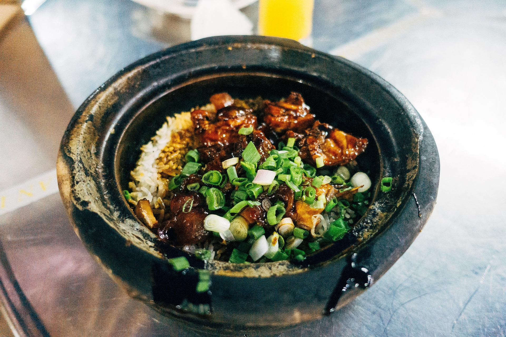

Home
Claypot Rice

Description
Claypot rice is an old favourite of mine that my mother cooked as comfort food. This isn't her recipe, but it's my own recipe that I put together. Out of all the recipes in this website, this is by far the one with the most ingredients—but it's actually surprisingly simple to cook! Granted, there's a lot of precautions you have to take as it's not a very forgiving dish to mess up. Once again the portioning of the ingredients are largely to taste—but be more careful how much sauce you put, lest it end up too salty, because there's no going back once it's in the claypot and cooking.
Ingredients
- Uncooked rice
- 3 cloves of garlic
- Soy sauce
- Oyster sauce
- Sesame oil
- White pepper
- Granulated sugar
- Chinese cooking wine
- Meat(s) of choice, recommend chicken and scallops
- Shiitake mushrooms
- Ginger
- Chicken stock
- Scallions (optional)
Steps
- Prepare your meat(s) of choice depending on what it is—this will likely be cutting the chicken and scooping the scallops.
- Mix soy sauce, oyster sauce, sesame oil, white pepper, chinese cooking wine, and granulated sugar together in a bowl. Make sure to taste this carefully, because once it's marinaded you can't go back.
- Toss your meat of choice in the mixed sauce, and leave to marinate for at least an hour.
- Chop the cloves of garlic, shiitake, and ginger.
- Pour the chicken stock and scoop some uncooked rice (make sure to rinse it), into the claypot. Remember, rice expands as it cooks so be wary of how much you scoop out. Drizzle some sesame oil on top and mix it into the rice—this will help give the rice a delightful crunchy crust where it meets the claypot.
- If using a gas stove, you can place the claypot directly on it, but if you're using an electric stove (which I don't recommend necessarily, but if it's all you have you can use it), put some space between the stove and the claypot as it may likely crack otherwise. Once you turn the heat to medium, cover the claypot.
- Once the stock starts to boil, uncover the claypot and lay the rest of your ingredients on the top. Make sure to spread them out, or they will not cook evenly. Drizzle the marinade on top of all the ingredients. Once they're all placed, turn the heat down to low and place the lid once more. Wait until you hear a crackling sound.
- The last step is simple—turn the heat up to medium and wait. Make sure to check on it after a minute to make sure it's not burning. You can check the crust with a spoon if you'd like, but be aware of how hot the claypot is when you do this!
- Turn the heat back to low and wait for the rice and meats to cook thoroughly. Make sure to check on it every once in a while, you can check doneness of the meat by poking it with a fork. Once it's done, remove from heat with the heat protection of your choice, uncover the lid, and enjoy! Be careful though, the claypot stays hot for quite a while even when taken off the heat. If you want scallions, chop and garnish. Make sure to put the claypot on a thermal insulation pad. (Extra note—if the food still feels too hot and you really want to chow down, you can spoon out smaller chunks of it unto a plate and wait for it to cool there before eating. It's a bit strange, but it does help when you're impatient and hungry!)